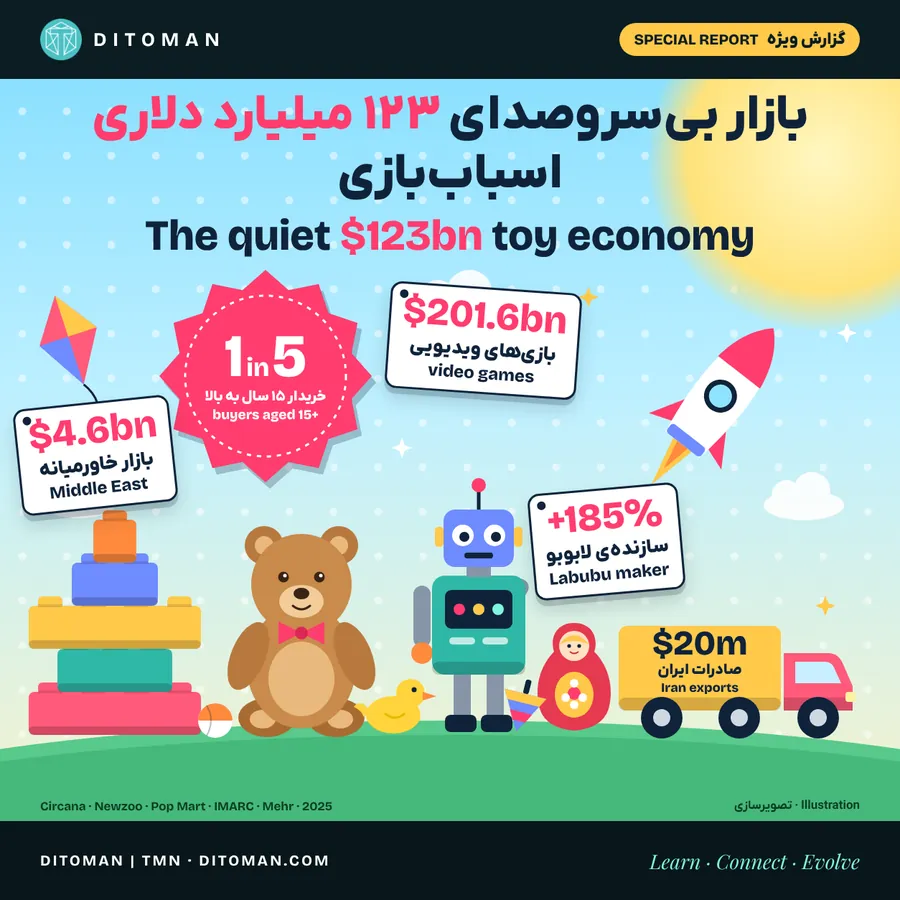

بازار بیسروصدای ۱۲۳ میلیارد دلاری اسباببازی؛ بزرگسالها هم بازی میکنند
The quiet $123 billion toy economy: grown-ups are playing too
From Tamagotchi to Labubu, from NFTs to AI dolls: how toys changed in 50 years, why children still want them, and Iran’s chance to become a regional toy hub.
از تاماگوچی تا لابوبو، از انافتی تا عروسک هوشمند: اسباببازی در ۵۰ سال چطور عوض شد، چرا بچهها هنوز آن را میخواهند و فرصت ایران برای هاب اسباببازی منطقه شدن.
یادت هست آخرین اسباببازیات چه بود؟ اگر هنوز یک عروسک، یک جعبه آجر ساختنی یا چند کارت بازی را نگه داشتهای، فقط دلتنگ گذشته نیستی؛ بخشی از یک بازار ۱۲۳ میلیارد دلاری هستی.
در ۲۰۲۵ مردم دنیا ۱۲۳ میلیارد دلار اسباببازی خریدند و از هر پنج دلارش، تقریباً یک دلار را کسانی دادند که ۱۵ سال یا بیشتر داشتند. خرید این گروه از ۲۰۲۰ تا امروز بیش از دو برابر شده Circana.
در تهران هم موزهی اسباببازی کوچکی در یک خانهی قدیمی باز شده که بیش از ۲٬۰۰۰ اسباببازی از ایران باستان تا آتاری دههی ۸۰ دارد. بنیانگذارش انتظار داشت بچهها بیایند؛ ولی بزرگسالها هم مدام میآیند تا عروسکهای «سارا و دارا» و ماشینهای حلبی کودکیشان را ببینند AFP / Malay Mail. اسباببازی دیگر فقط مال بچهها نیست. این گزارش را با هم دنبال میکنیم: بازار چقدر بزرگ است، در ۵۰ سال چه عوض شده، چرا بچهها با وجود موبایل هنوز اسباببازی میخواهند، و ایران چه جایی در این بازار دارد.
۰۱. خبر: بزرگسالها مشتری تازهی اسباببازی
الجزیره در گزارشی ویدیویی نوشته صنعت اسباببازی «مشتری محبوب تازهای» دارد: بزرگسالها. بزرگسالان بدون فرزند پول آزاد بیشتری دارند و با «اقتصاد نوستالژی» بازار را سرپا نگه داشتهاند Al Jazeera English. دادهها هم همین را میگویند:
- بچههای زیر ۱۰ سال هنوز بیش از ۶۵٪ فروش جهانی را دارند، ولی سهمشان کم میشود Circana.
- در نیمهی اول ۲۰۲۶ فروش جهانی اسباببازی ۱۴٪ رشد کرد، سریعترین رشد در سالهای اخیر. در آمریکا ۳۵٪ رشد را بزرگسالان بالای ۱۸ سال ساختند Tech Times.
- در یک نظرسنجی ۲۰۲۵، ۱۹٪ بزرگسالان آمریکایی در شش ماه گذشته کارت پوکمون برای خودشان خریده بودند، و فقط حدود یکچهارمشان واقعاً بازیاش را بازی میکردند. بقیه جمع میکنند Tech Times.
- در آلمان، «کیدالتها» (بزرگسالانی که برای خودشان اسباببازی میخرند) ۳۵٪ فروش اسباببازی را دارند Tech Times.
۰۲. بازار بیسروصدا چقدر میارزد؟
| بازار | ارزش | سال | منبع |
|---|---|---|---|
| بازیهای ویدیویی (جهان) | ۲۰۱٫۶ میلیارد دلار | ۲۰۲۵ | Newzoo |
| اسباببازی (جهان) | ۱۲۳ میلیارد دلار، ۸٪ رشد | ۲۰۲۵ | Circana |
| پاپمارت، سازندهی لابوبو | ۵٫۴ میلیارد دلار درآمد، ۱۸۵٪ رشد | ۲۰۲۵ | The Star |
| اسباببازی (خاورمیانه) | حدود ۴٫۶ میلیارد دلار (برآورد) | ۲۰۲۵ | IMARC |
| اسباببازی (ایران) | ۳۰۰ تا ۳۵۰ میلیون دلار (برآورد فعالان صنعت) | ۱۴۰۱–۱۴۰۴ | مهر |
| صادرات اسباببازی ایران | حدود ۲۰ میلیون دلار | ۱۴۰۱ | مهر |
بازی ویدیویی و اسباببازی با هم بیش از ۳۲۰ میلیارد دلار در سال گردش دارند. یک شرکت بهتنهایی، پاپمارت، با عروسکهای لابوبو در یک سال درآمدش را نزدیک سه برابر کرد. این عددها از کنار ما رد میشوند چون اسباببازی «جدی» به نظر نمیرسد.
۰۳. ۵۰ سال در ۱۰ ایستگاه
- ۱۹۷۷عروسکهای «جنگ ستارگان»: اسباببازی به بخشی از یک دنیای فیلم تبدیل شد و دوران «لایسنس» شروع شد.
- دههی ۸۰ترنسفورمرها، آتاری و بازیهای ویدیویی خانگی: اولین رقابت جدی صفحهنمایش با اسباببازی.
- ۱۹۹۶تاماگوچی و پوکمون: حیوان خانگی دیجیتال در جیب، و کارتهایی که بعد از ۳۰ سال هنوز بزرگسالان جمعشان میکنند.
- ۲۰۰۰ به بعدعروسکهای «سارا و دارا» در ایران بهعنوان جایگزین داخلی باربی ساخته شدند Wikipedia.
- ۲۰۱۱اسکایلندرز: مجسمهای که روی سکو میگذاری و در بازی ویدیویی زنده میشود. تا ۲۰۱۳ بیش از ۱۰۰ میلیون مجسمه و بیش از ۵۰۰ میلیون دلار درآمد GameSpot.
- ۲۰۱۷کریپتوکیتیز: گربههای دیجیتال روی اتریوم، از اولین انافتیهای معروف. یک گربه بیش از ۱۱۷ هزار دلار فروخته شد و این بازی حدود ۱۲٪ تراکنشهای اتریوم را گرفت Quartz.
- ۲۰۲۱اوج «بازی کن و پول دربیاور» (play-to-earn) با توکن و انافتی؛ رونقی که بعد از ۲۰۲۲ فروکش کرد.
- ۲۰۲۴–۲۰۲۵لابوبو و «جعبهی شانسی»: عروسکی که نمیدانی کدام مدلش داخل جعبه است؛ نیمی اسباببازی، نیمی کالای کلکسیونی.
- ۲۰۲۵متل (سازندهی باربی) با OpenAI همکاری کرد تا اسباببازیهای مجهز به هوش مصنوعی بسازد، با تأکید بر ایمنی و حریم خصوصی Kidscreen.
- ۲۰۲۶کارتهای بازی، مجموعههای لگو برای بزرگسالان و کلکسیونها موتور رشد بازارند.
الگوی این ۵۰ سال: اسباببازی اول یک «شیء» بود، بعد به «تجربه» تبدیل شد و حالا برای خیلیها یک «دارایی» است. ایستگاه بعدی: اسباببازیای که با تو حرف میزند.
۰۴. چرا بچهها هنوز اسباببازی میخواهند؟
- بازی، غذای مغز است: آکادمی اطفال آمریکا در گزارش «قدرت بازی» (۲۰۱۸) از پزشکان خواست برای کودکان «نسخهی بازی» بنویسند. بازی استرس را کم میکند و زبان، ریاضی و مهارت اجتماعی را تقویت میکند. همین گزارش هشدار میدهد صفحهنمایش میتواند جای بازی واقعی را بگیرد AAP.
- اسباببازی ساده، گفتگوی بیشتر: در پژوهشی که در JAMA Pediatrics منتشر شد، وقتی پدر و مادر با نوزادشان با اسباببازی الکترونیکی بازی کردند، کمتر حرف زدند و گفتگوی کمتری شکل گرفت تا وقتی با بلوک و پازل چوبی یا کتاب بازی کردند EurekAlert.
- بازی با هم: مطالعهی «خوب بازی کن» لگو با بیش از ۵۷ هزار پدر، مادر و کودک در ۳۵ کشور نشان داد بیشتر بچهها دوست دارند بیشتر با والدینشان بازی کنند LEGO Foundation.
- لمس کردن: اسباببازی چیزی است که میشود در دست گرفت، ساخت، خراب کرد و دوباره ساخت. بسیاری از برندها حالا اسباببازی فیزیکی را به اپ و بازی وصل میکنند، نه اینکه جایش را به صفحهنمایش بدهند.
یعنی موبایل اسباببازی را از بین نبرده؛ فقط شکلش را عوض کرده.
۰۵. ایران: بازار ۳۰۰ میلیون دلاری با تولید محدود
- طبق گفتهی فعالان صنعت، بازار اسباببازی ایران حدود ۳۰۰ میلیون دلار در سال است، حدود ۲۵۰ تولیدکنندهی دارای برند فعالاند و تولید داخلی ۳۰ تا ۳۵٪ بازار را دارد Mehr News. در گزارشهای تازهتر خبرگزاری مهر، گردش مالی تا ۳۵۰ میلیون دلار برآورد شده مهر.
- صادرات در سال ۱۴۰۱ حدود ۲۰ میلیون دلار بود و بیشتر به عراق، ارمنستان، افغانستان، روسیه و عمان رفت Mehr News.
- واردات رسمی کوچک است: در هفت ماه اول ۱۴۰۴ فقط حدود ۲٬۱۴۰ تن اسباببازی به ارزش ۷٫۱ میلیون دلار وارد شد و ۹۰٪ آن از چین بود. امارات با ۷۸۰ هزار دلار دوم بود WANA.
- فاصلهی ۷ میلیون دلار واردات رسمی تا بازار چندصدمیلیوندلاری یعنی بخش بزرگی از بازار از راههای غیررسمی تأمین میشود؛ رقم دقیقش منتشر نشده و برآوردها متفاوت است مهر.
- مشکلات صنعت به گفتهی خود فعالان: دسترسی سخت به سرمایه، بانکهایی که با شرکتهای اسباببازی کار نمیکنند، و مالیات بر ارزش افزودهی ۹٪ با اینکه این تولید فرهنگی حساب میشود Mehr News.
خوانش دیتومان: ایران در بازار خودش سهم دارد، ولی در بازار همسایهها تقریباً غایب است.
۰۶. همسایهها: بازاری که دارد دو برابر میشود
بازار اسباببازی خاورمیانه طبق برآورد IMARC در ۲۰۲۵ حدود ۴٫۶ میلیارد دلار بود و پیشبینی میشود تا ۲۰۳۴ به ۹٫۲ میلیارد دلار برسد (پیشبینی یک شرکت پژوهش بازار) IMARC. امارات نقش انبار و بازفروش منطقه را دارد؛ همین حالا دومین مبدأ واردات رسمی اسباببازی ایران است WANA. عراق، افغانستان، پاکستان، قفقاز و آسیای میانه جمعیتی جوان و پرتعداد دارند و چند تا از آنها همین حالا مشتری اسباببازی ایرانیاند.
۰۷. فرصت ایران: پلاستیک داریم، قصه داریم؛ برند نداریم
تحلیل دیتومان: صادرات ۲۰ میلیون دلاری ایران کمتر از نیم درصد بازار ۴٫۶ میلیارد دلاری خاورمیانه است. یعنی جای رشد بسیار زیاد است. چند مزیت واقعی:
- مواد اولیه: بیشتر اسباببازیها از پلاستیکهایی مثل پلیپروپیلن، پلیاتیلن، پلیاستایرن و ABS ساخته میشوند و ایران همهی اینها را در پتروشیمیهایش تولید میکند؛ پتروشیمی تبریز برای افزایش ظرفیت ABS و پلیاستایرن برنامه داشته Plastemart.
- هزینهی تولید: انرژی و دستمزد در مقایسه با بیشتر همسایهها ارزانتر است.
- نزدیکی: بازارهای عراق، افغانستان، آسیای میانه و قفقاز با کامیون در دسترساند.
ولی پول اصلی این صنعت در پلاستیک نیست؛ در طراحی، شخصیت و داستان است. لابوبو یک شخصیت است، پوکمون یک دنیاست. ایران قصهها و شخصیتهای زیادی دارد، از «کلاهقرمزی» تا اسطورههای شاهنامه. مسئله تبدیل اینها به محصول و برند است. چیزی که لازم است: استانداردهای ایمنی بینالمللی برای صادرات، تأمین مالی، فروش آنلاین و برندسازی برای بچهها و بزرگسالان، هر دو.
۰۸. آینده: اسباببازی کجا میرود؟
- فیزیکی + دیجیتال: اسباببازیای که در دست است و در اپ یا بازی هم زندگی میکند.
- اسباببازی هوشمند: عروسک و رباتهایی که با هوش مصنوعی حرف میزنند. پرسشهای ایمنی و حریم خصوصی کودکان اینجا جدیاند.
- کلکسیون و دارایی: کارتها و عروسکهای کمیاب مثل یک دارایی خرید و فروش میشوند. این بخش هیجانانگیز است ولی ریسک حباب دارد؛ رونق انافتیهای بازی در ۲۰۲۱ نمونهی خوبی بود.
- بازی برای همهی سنین: مرز اسباببازی، بازی ویدیویی، مد و سرگرمی کمرنگ میشود Circana.
۰۹. نگاه دیتومان
اسباببازی پلی میان نسلهاست: پدری که کارت پوکمون نوجوانیاش را نگه داشته، حالا با دخترش بازی میکند؛ مادری که «سارا و دارا» داشته، در موزهی تهران آن را به بچهاش نشان میدهد. پشت این احساس، بازاری ۱۲۳ میلیارد دلاری است که کمتر کسی دربارهاش حرف میزند. ایران مواد اولیه، نیروی کار و همسایههای پرجمعیت را دارد. اگر طراحی و شخصیتسازی را هم جدی بگیرد، میتواند از این بازار سهم واقعی بگیرد. این مسیر را با هم دنبال میکنیم.
منابع
- بازار جهانی: Circana · Tech Times · eMarketer · Newzoo / PocketGamer · IMARC · Pop Mart / The Star
- خبر الجزیره: Al Jazeera English · موزهی اسباببازی تهران: AFP / Malay Mail · سارا و دارا: Wikipedia
- تاریخچه: Skylanders / GameSpot · CryptoKitties / Quartz · Mattel و OpenAI / Kidscreen
- پژوهش: AAP، قدرت بازی · Sosa و همکاران، JAMA Pediatrics · LEGO Play Well
- ایران: Mehr News، صادرات ۱۴۰۱ · مهر، گردش مالی ۳۵۰ میلیون دلار · مهر، سهم تولید داخلی · WANA، واردات ۱۴۰۴ · Plastemart، پتروشیمی تبریز
آخرین بازبینی: ۱۹ آبان ۱۴۰۵. آمار بازار ایران برآورد فعالان صنعت است و آمار رسمی جامعی منتشر نشده.